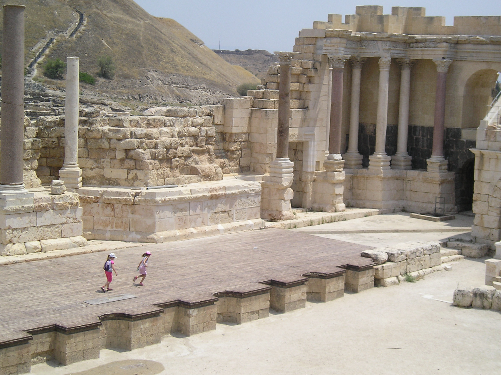

Beth Shean (Scythopolis)

- Find Name
- Beth Shean (Scythopolis)
- Description
- A crossroads city where the Jezreel Valley meets the Jordan Valley, occupied from the late Neolithic period to the Middle Ages. The steep tell holds Bronze and Iron Age layers, including five temples and an Egyptian administrative centre and governor's residence of the 15th-13th centuries BC (a replica Seti I stele stands on the tell). Below it, the Roman-Byzantine city of Scythopolis — leading city of the Decapolis after Pompey's conquest in 63 BC — preserves one of the largest Roman theatres in Israel (about 7,000 seats), colonnaded streets, a nymphaeum, two bathhouses, a market and shops, largely destroyed by the AD 749 earthquake.
- Historical Period
- Bronze Age–Byzantine
- Evidence Class
- Contextual
- Interpretations
- The identification with biblical Beth-shan is secure. The exact wall section where Saul's body was displayed is not identified, and is not claimed here. The AD 749 earthquake destruction of the lower city is well established; the 732 BC Assyrian destruction of the Iron Age town (attributed to Tiglath-Pileser III) is the excavators' reading of a fire layer, not an inscribed event.
- Alternative Names
- Beth-shan; Scythopolis; Nysa Scythopolis
- Related Places
- Related Books
- Related People
- Scripture Illuminated
- Biblical Significance
- Beth Shean is where Israel's first king's story ended in public shame: after Gilboa, the Philistines fastened Saul's body and his sons' bodies to its wall (1 Samuel 31:10), until the men of Jabesh-gilead came by night to take them away. The same tell that held an Egyptian garrison and a Philistine wall later held Solomon's district administration (1 Kings 4:12) — a city that kept changing masters while the valley road beneath it never changed.
- Artifact Date
- c. 5th millennium BC - AD 749 (tell and Roman-Byzantine lower city; earthquake AD 749)
- Current Location
- In situ, Beth Shean National Park, Israel
- Date Discovered
- 1921-1933 (University of Pennsylvania, tell); 1980s onwards (Mazor, Foerster and Tsafrir, lower city)
- Discovery Location
- Beth Shean, junction of the Jezreel and Jordan Valleys, Israel
- Timeline Era
- United Monarchy
Awaiting Review Not yet checked against scholarly sources. Treat its claims as provisional until this entry is reviewed. About verification
Last reviewed: not yet reviewed